Managing user access in Keycloak
Creating users
A new deployment of Payment Manager comes with no users at all. To add users, you can:
Creating user accounts from scratch
This section looks at how to add users from scratch and configure user accounts using the Users menu in Keycloak.
For detailed guidance on the options available in the Users menu, see section User management in the Keycloak Server Administration Guide.
To add a user, complete the following steps:
-
Click Users in the left-hand navigation pane.
-
Click the Add user button on the right.
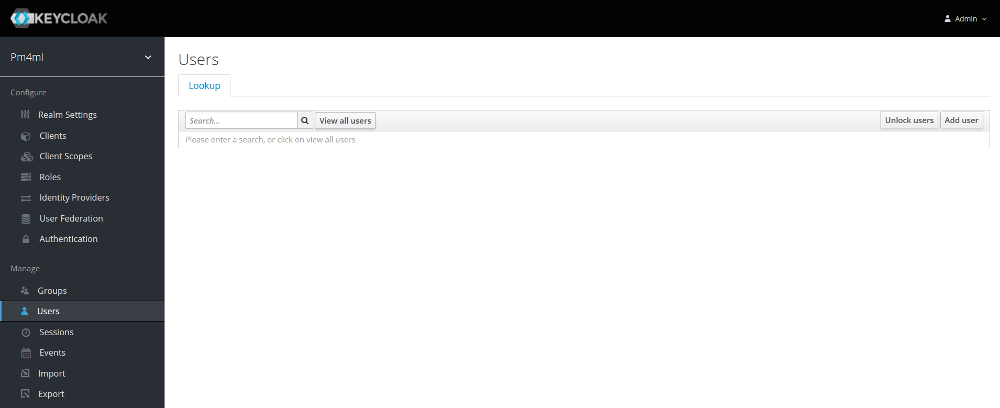
The Add user page comes up.
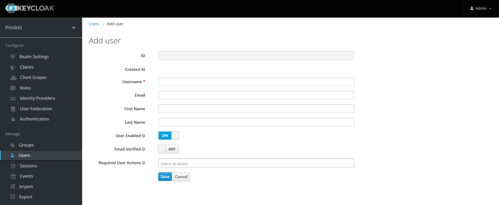 -
Fill in the following fields:
| The ID field is disabled and will get populated on clicking Save. |
-
Username
-
Email
-
First Name
-
Last Name
-
User Enabled: ON
-
Email Verified: ON
-
Click Save. On clicking Save, the user is created. You will see the ID field getting populated.
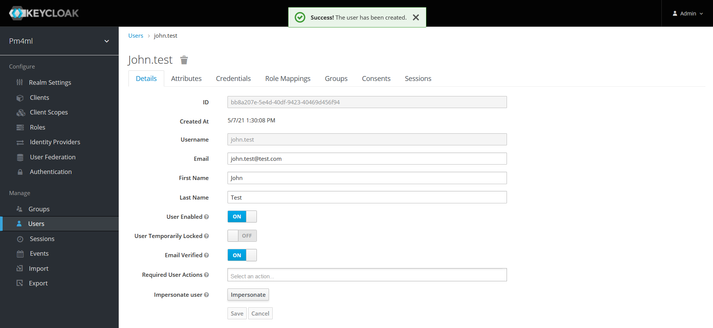 -
Create a password for the user:
-
Click the Credentials tab.
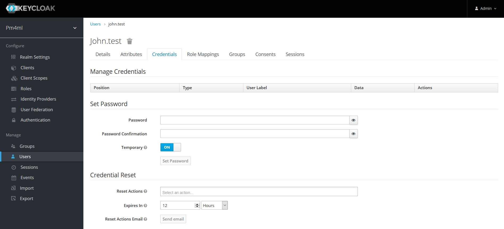 -
Enter a password in the Password field.
-
Re-enter the password in the Password Confirmation field.
-
If it is not a temporary password, set Temporary to OFF.
-
Click Set Password.
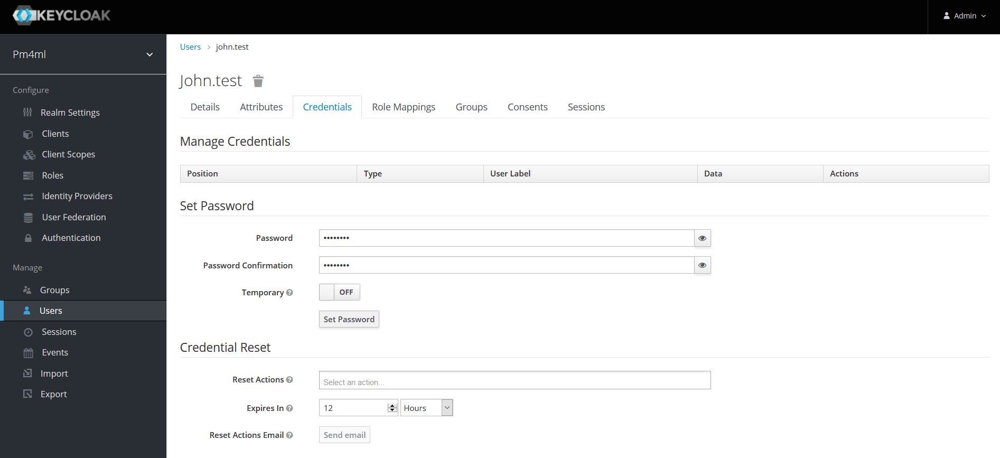
-
-
Set roles for the user:
-
Click the Role Mappings tab.
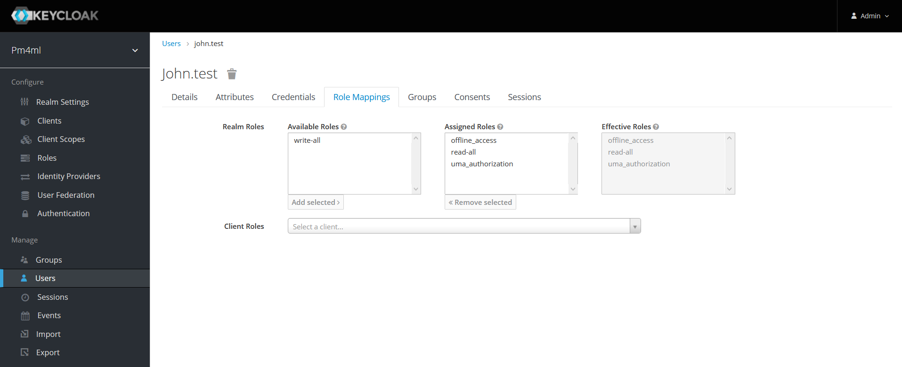
By default, users in the realm get the following roles: read_all, offline_access, and uma_authorization. Decide whether you want to add the write-all role too.
If you wish to add a role other than any of the default ones, see section Adding roles. -
If you want to add the write-all role, click the role in the Available Roles box and click Add selected.
-
-
Optionally, you can add a user to an existing group. You can do this on the Group tab.
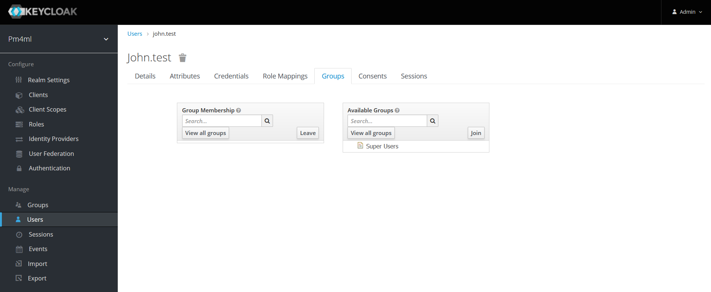 For detailed information on creating groups and subsequent group assignment, see section Groups in the Keycloak Server Administration Guide.
-
Creating user accounts from an existing Active Directory/LDAP user database by user federation
If a DFSP has an existing Active Directory (AD) or LDAP user database in place for user management, it is possible to configure Keycloak so that Keycloak treats users in the DFSP’s AD/LDAP database as if they belonged to the Keycloak database as well. Every time there is a login request, Keycloak forwards the request to the AD/LDAP database.
To tie an Active Directory user database to Keycloak:
-
Click User Federation in the left-hand navigation pane. The User Federation page displays.
-
Select the kerberos option from the Add provider… drop-down list.
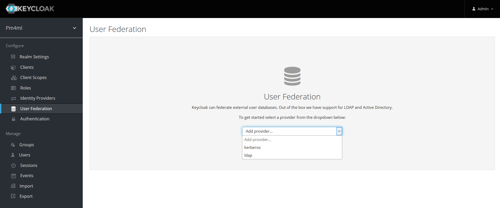 -
Configure details as per section User Storage Federation in the Keycloak Server Administration Guide.
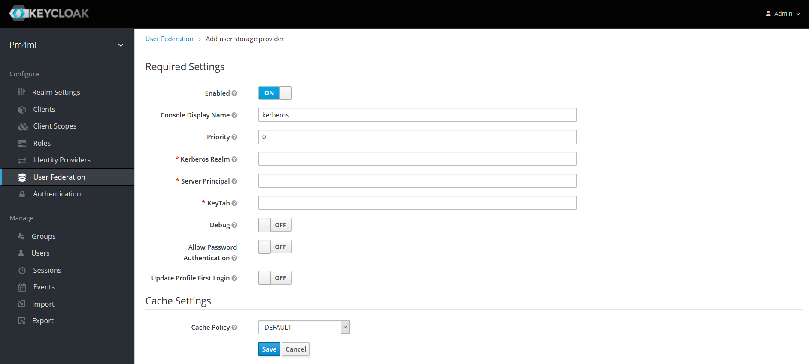
Similarly, to link up Keycloak with an LDAP database:
-
Click User Federation in the left-hand navigation pane. The User Federation page displays.
-
Select the ldap option from the Add provider… drop-down list.
-
Configure details as per section User Storage Federation in the Keycloak Server Administration Guide.
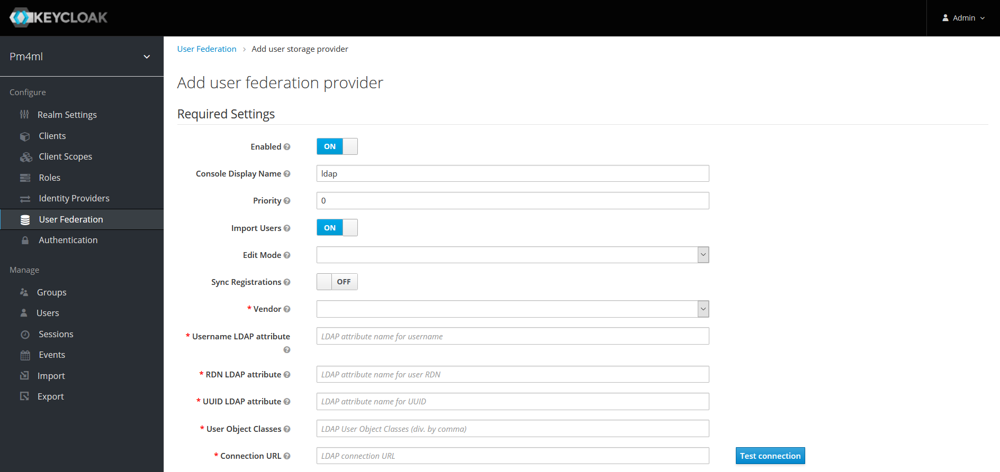
Adding roles
A role identifies a type or category of users with set permissions. The Payment Manager realm comes with the following default roles:
-
offline_access (comes with Keycloak out-of-the-box, enables the usage of offline tokens)
-
uma_authorization (comes with Keycloak out-of-the-box, UMA stands for User-Managed Access)
-
read-all
-
write-all
It is possible to define additional roles through the Add Role button.
The permissions within roles and how those relate to the functions that a user can perform via the Experience API are not created automatically. They must be configured manually in Payment Manager, in the Experience API:
-
src/rolePermissionMap.jsonmaps Keycloak roles to internal Payment Manager permissions. -
src/handler.jsallows you to define what action can or cannot be performed if a user has or does not have a particular Payment Manager permission.
In addition to allowing or denying access to a particular function, you can also do filtering based on roles. Take the following example. Let’s suppose that a DFSP wants one of their Support staff to only be able to search for transfers that are errors. It is possible to make a new role just for that DFSP in their Keycloak, and map that role to the respective permissions in the Experience API.
Configuring authentication
The Authentication menu allows you to configure authentication details for a user account, such as two-factor authentication, password and one-time passcode (OTP) policies, actions that the user must do or cannot do when they first log in, and so on.
For detailed guidance on the options available in the Authentication menu, see section Authentication in the Keycloak Server Administration Guide.
Two-factor authentication
By default, Payment Manager comes with two-factor authentication configured. On their first login, users are prompted to scan a QR code with their Google Authenticator. On each login, users must use a combination of their password and a one-time passcode to access Payment Manager.
This setting is configured via the Flows tab > Browser drop-down menu item > Browser - Conditional OTP option, which must be set to REQUIRED for two-factor authentication to take place on user login.
| To ensure Google Authenticator based two-factor authentication is supported, on the OTP Policy tab, leave OTP Hash Algorithm as SHA1. |
Required actions
You can choose to require the user to perform certain actions before they are allowed to log in. These actions are called required actions. Once a required action is completed, the user will not have to perform the action again.
For detailed information on required actions, see section Required Actions in the Keycloak Server Administration Guide.
Password policy
To set a password policy, go to the Password Policy tab and click Add policy… on the right-hand side. The drop-down menu has all the aspects of a password policy that you can control (for example, expiry, minimum length, use of special characters, and so on). Click any of the options to start configuring details.
For detailed information on password policy options in Keycloak, see section Password Policies in the Keycloak Server Administration Guide.
OTP policy
To configure details of the policy for how OTPs are validated, go to the OTP Policy tab.
| To ensure Google Authenticator based two-factor authentication is supported, on the OTP Policy tab, leave OTP Hash Algorithm as SHA1. |
For detailed information on OTP policy options in Keycloak, see section OTP Policies in the Keycloak Server Administration Guide.
Resetting a user’s password
When a user forgets their password, you can reset their password following these steps:
-
Click Users in the left-hand navigation pane.
-
Click the Credentials tab.
-
Go to Reset Password and set a new password:
-
Enter a password in the Password field.
-
Re-enter the password in the Password Confirmation field.
-
Set the password as a temporary password that the user will be prompted to change on first use. Set Temporary to ON.
-
Click Reset Password.
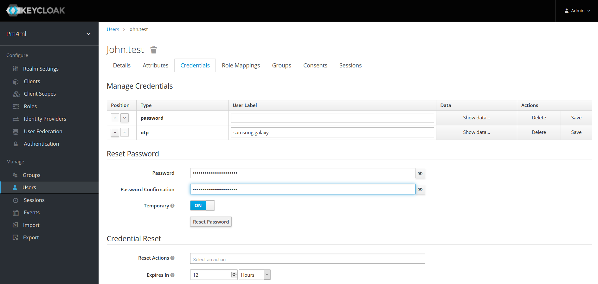
-
Resetting a user’s one-time passcode (OTP)
By default, a new user account has two-factor authentication configured. This means that the first time the user logs in, they are prompted to scan a QR code with Google Authenticator, and then sign in to Payment Manager with a one-time passcode.
If the user ever loses their record in their Google Authenticator (for example, the user’s phone is lost), then the user’s OTP must be reset following these steps:
-
Click Users in the left-hand navigation pane.
-
Click the Credentials tab.
-
Go to Manage Credentials, and click the Delete button to delete the otp record.
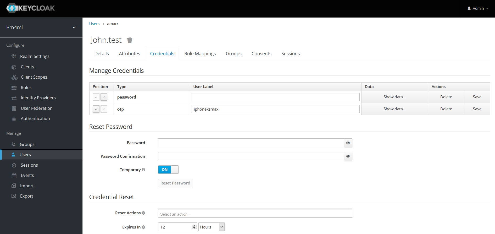
The next time the user tries to sign in, they have to scan the QR code again.
Authentication through third-party identity providers
It is possible to set up Payment Manager in such a way that users can authenticate with external OpenID Connect or SAML Identity Providers. For example, Payment Manager users could log in to Payment Manager using their Google account. You can configure that via the Identity Providers menu in the left-hand navigation pane.
For detailed information, see section Identity Brokering in the Keycloak Server Administration Guide.
Viewing sessions
The Sessions menu allows you to view all active Payment Manager sessions:
-
Click Sessions in the left-hand navigation pane. The Sessions page displays on the right-hand side. The Realm Sessions tab shows the clients configured in Keycloak. In our case, this will be the pm4ml-customer-ui client, that is, the Payment Manager application.
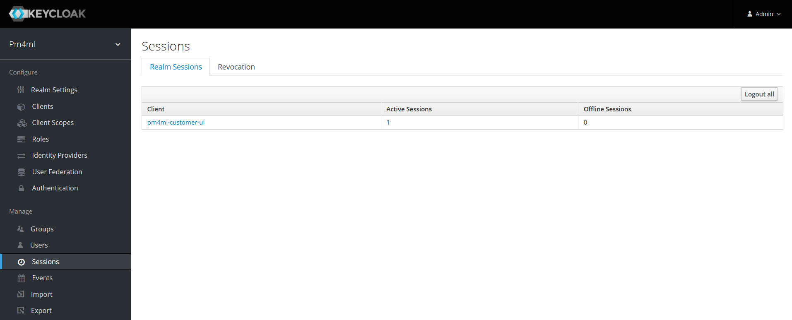 -
Click the client. You are taken to the Clients menu > Sessions tab.
-
Click Show Sessions to view a list of all users with active sessions. Information is displayed about the IP addresses where users logged in from and how long they have been logged in for.
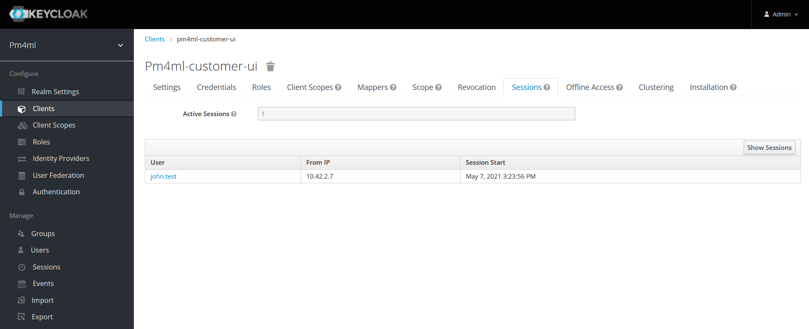
You can click a user’s name to view further details about them.
Alternatively, to view what sessions a particular user has open:
-
Click Users in the left-hand navigation pane. The Lookup page is displayed.
-
Enter a keyword in the Search field and click the magnifier button, or click View all users. The list of search results/users is displayed.
-
Click the ID of the user that your are interested in.
-
Click the Sessions tab.
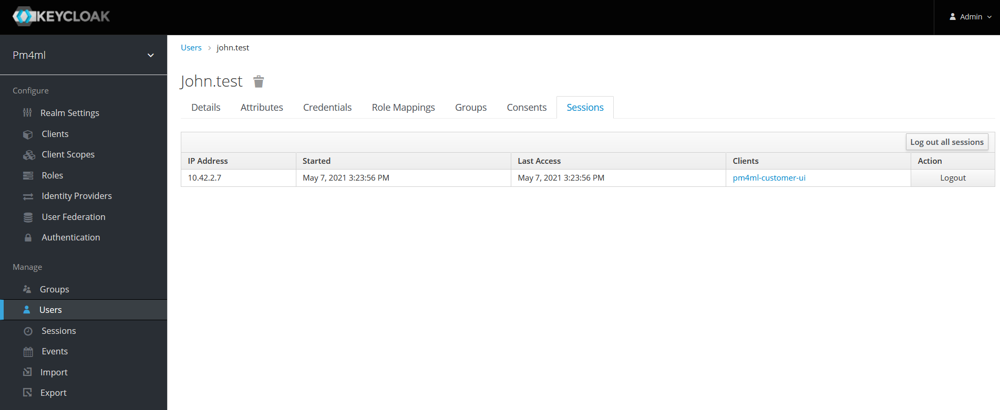
The tab displays the following information:-
IP Address
-
Started: when the session started
-
Last Access: when Payment Manager was last accessed by the user
-
Clients: which client (application) the user is logged in to
-
You can also choose to log out the user of the session using the Logout button.
Viewing user details
To view details of a particular user:
-
Click Users in the left-hand navigation pane. The Lookup page is displayed.
-
Enter a keyword in the Search field and click the magnifier icon, or click View all users. The list of search results/users is displayed.
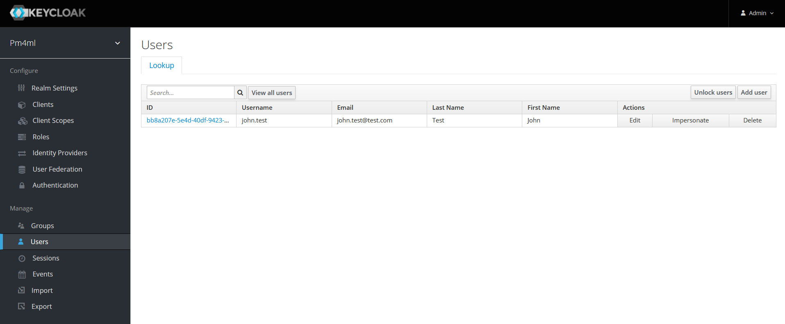 -
To view details of a particular user, click the ID of the user that you are interested in.